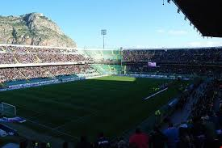

PALERMO CALCIO
Stadio Renzo Barbera
Lo Stadio Comunale Renzo Barbera, noto anche con il vecchio nome de La Favorita, dall'omonimo parco in cui si trova, e' il più grande stadio, nonché impianto sportivo, di Palermo. L'impianto e' di proprietà del comune di Palermo e viene utilizzato, dalla sua inaugurazione, per gli incontri casalinghi della squadra di calcio del Palermo.
Suddivisione Stadio
- Curva Nord: settore in cui si trovano la maggior parte delle tifoserie organizzate della provincia, in passato veniva anche chiamata Curva Mondello;
- Curva Sud: anche in questo settore si trovano tifoserie organizzate ed è presente la cosiddetta gabbia riservata ai tifosi ospiti;
- Tribuna coperta: unico settore coperto dello stadio; lato in cui sono poste la maggior parte delle telecamere, in questo settore sono allocate anche la Tribuna Stampa, l'area sponsor e la Tribuna VIP;
- Tribuna Montepellegrino: meglio nota come Gradinata, e' speculare alla Tribuna coperta ma senza la copertura.
